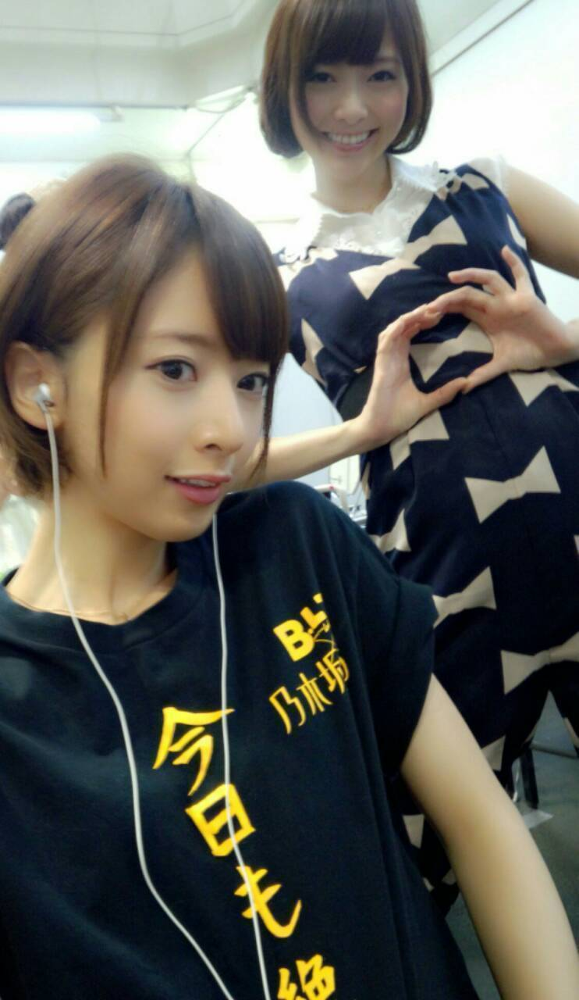

| 2013/09 02 Mon | 橋本奈々未 (´_ゝ｀) 美味しいものはだいじ |
こんにちは！橋本です！
ここ最近は、色々駆け巡っていました！
まず、昨日は 個別握手会in京都！
来てくれたみなさん、ありがとうございましたっ(@^o^@)
楽しんでもらえましたかーっ？？♪
今回は
BLTの 今日も絶好調Tシャツを着たよ(｀_´)ゞ
お揃いにしよー！！笑

まいやんも欲しがってくれていたぜ☆
そして、19日札幌から始まった全国ツアーも
30日東京で無事終えることができました。
来てくださった皆さん、
ありがとうございました！！
真夏の全国ツアー、暑くなれましたか？(@^O^@)
反省を書き出すと止まらないので、ここには書きません
嬉しいことに、
10月6日に代々木第一体育館で追加公演をできることになったので
ここに今回のツアーでの反省と学んだことを成果として出せたらいいな！と思ってます！
ならば、このツアーでの10公演
どの回よりも良いライブになるはず！
と言うか、します！
ので、是非皆さん代々木に乃木坂を観に来てください！
全国ツアーと並行して、いろんなことが決まってきています！
楽天スーパーセールのCMが始まったり！
NARUTOのOP曲を担当させてもらえることになったり！
劇場版 BAD BOYS Jの試写を観させてもらったり！
SUMMER NUDE では 春夫さんとの恋路を阻むお兄ちゃんが登場したり！
この辺はまた改めて、ゆっくり詳しく書きます！！
なーんまら大好きだから
かっちゃくぞ！！！笑
乃木どこ、見てね。(=゜ω゜)ノ笑
そして今夜はSUMMER NUDE！
兄・リッキー登場からの意外な展開！
そして本編もついに...！！
是非観てください((o(^^)o))♪
観たい映画がたくさんあるけどなかなか観れなくてもどかしい
したっけね！
乃木どこー(゜-゜)笑